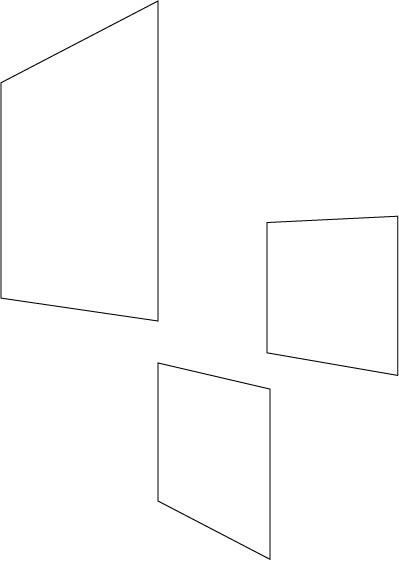
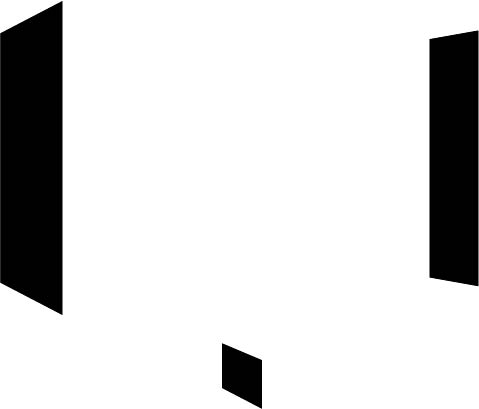
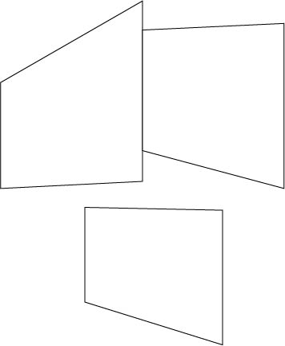

Open a New Illustrator Document 800 x 800,
Open Perspective Grid Tool,
Create Rectangle from Top Middle Corner towards the left until it's about 1/4th of the shown perspective square.
Try to make it a square, which will let you know when there's a purple line that goes through diagonally.
Create another Square from the back right bottom corner so that the Square is parallel to the first one in terms of orientation, and similarly try to make it 1/4th of the imaginary back square. (It should look smaller because of perspective.)
Lastly, Create one more Square At the Bottom Middle Corner in the same orientation as the other two rectangles so now all three should be facing the same way.
Have this Square go off of the perspective cube until it's roughly 1/9th of the total square.
Now turn off the perspective grid by going to View > Perspective Grid > Hide Grid.
Export as .jpg, and email to jleung3@gmu.edu
Just so I know it's you and not malware, send your best meme.
Original

Attempt 1

Attempt 2
